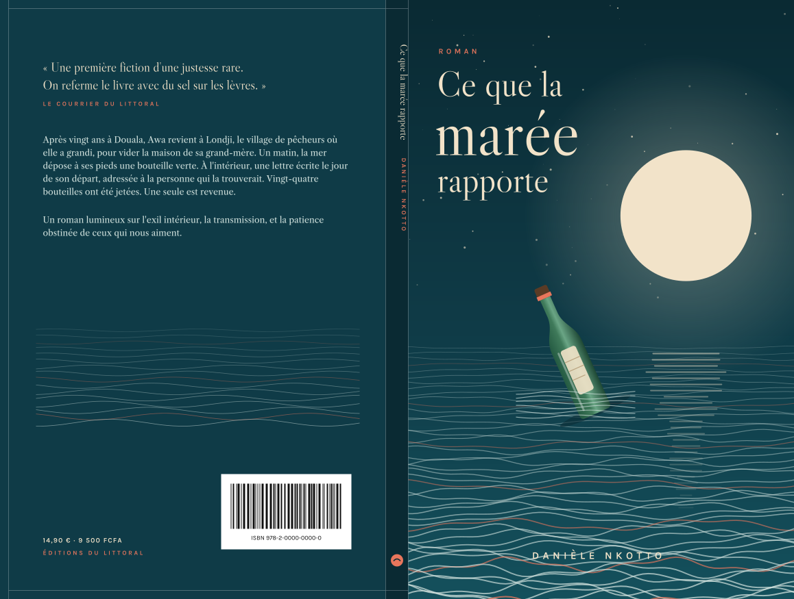

« À la personne qui trouvera ceci, je vous demande pardon de vous déranger. »
Après vingt ans à Douala, Awa revient à Londji, le village de pêcheurs où elle a grandi, pour vider la maison de sa grand-mère. Elle n'a pas encore osé ouvrir l'armoire quand la mer dépose à ses pieds une bouteille verte, scellée de cire rouge.
À l'intérieur, une lettre, écrite le jour de son départ et adressée « à la personne qui trouvera ceci ». Dans le cahier où Mama Ngo notait le prix du poisson depuis 1971, Awa découvre que ce n'était pas la seule.
Un roman sur ceux qui partent, ceux qui attendent, et la patience obstinée de la mer.
« Une première fiction d'une justesse rare. On referme le livre avec du sel sur les lèvres. »Le Courrier du Littoral
« Danièle Nkotto écrit l'absence comme on écrit la mer : par vagues, sans jamais forcer. »Revue Mosaïques
« Le genre de livre qu'on offre à sa mère, puis qu'on lui reprend pour le relire. »Librairie des Peuples, Yaoundé
Lisez-les dans votre navigateur, sur téléphone comme sur ordinateur, avec la taille de texte et l'ambiance qui vous conviennent.
Ouvrir la liseuseCouverture complète prête pour l'impression à la demande (Amazon KDP, IngramSpark, Lulu) : dos, tranche calculée selon le nombre de pages et le papier, fond perdu de 3 mm, zones de sécurité. Le texte est vectorisé, aucune police n'est à fournir à l'imprimeur.

Née à Kribi en 1988, Danièle Nkotto a été journaliste à Douala avant de revenir s'installer sur la côte. Ce que la marée rapporte est son premier roman. Elle y travaille depuis le jour où, enfant, elle a trouvé sur la plage une sandale qui n'était à personne.
Livraison au Cameroun, en France et en Belgique. Exemplaires dédicacés pour les commandes avant le 30 novembre.